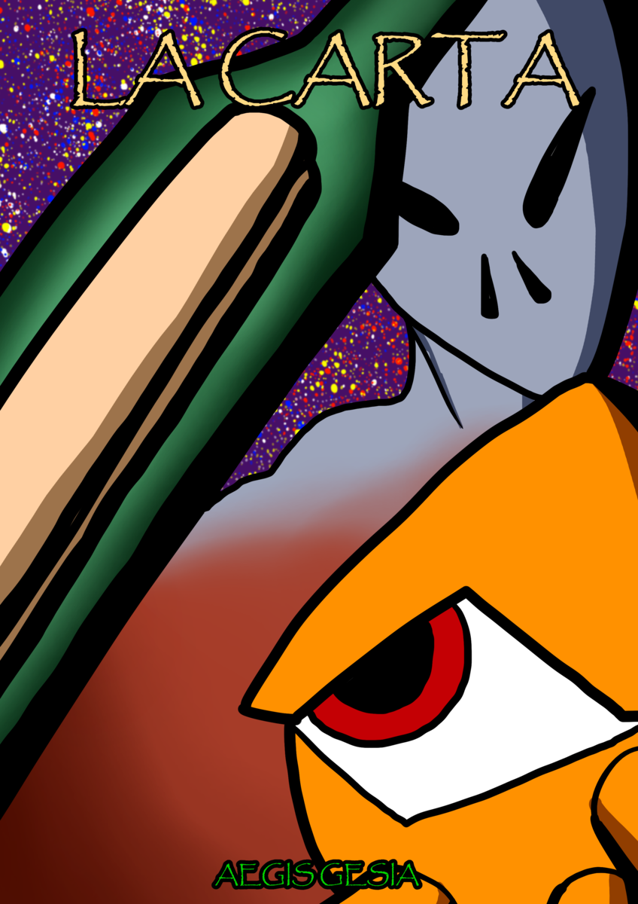

La carta es un webcomic originalmente publicado en la plataforma Manlat. Sin embargo, debido al cierre de esta, se decidió crearle un sitio web propio mediante github
Shelter, un cangrejo, despierta de una extraña pesadilla, va a la playa en donde encuentra un mensaje en una botella que anuncia un evento futuro muy similar a su pesadilla



Recuerda seguirme en bluesky y en youtube
Mi canal de Youtube:
Absurdo GerundioMi Bluesky:
Absurdo Gerundio